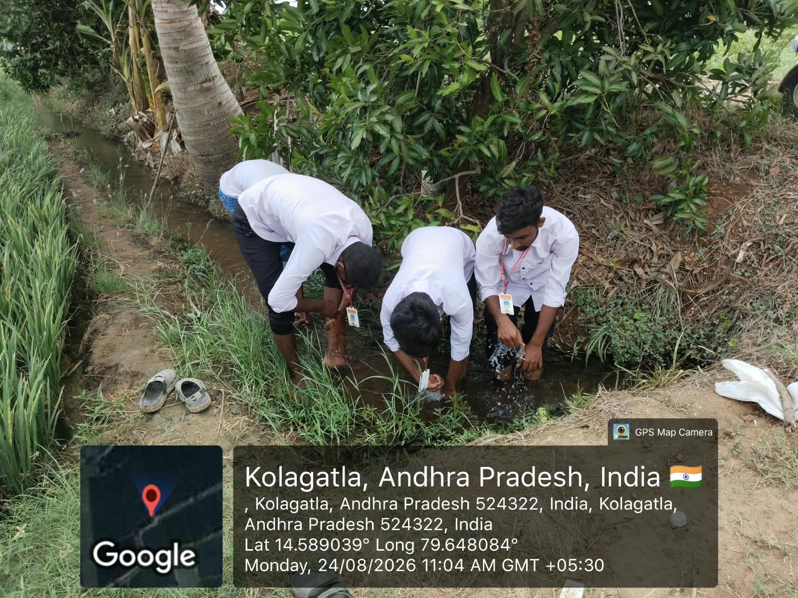
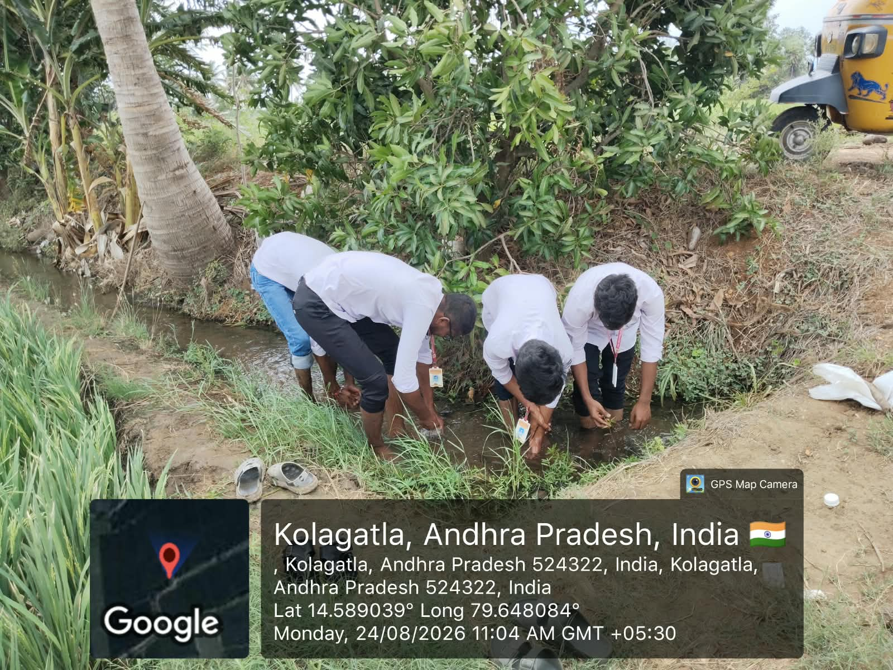
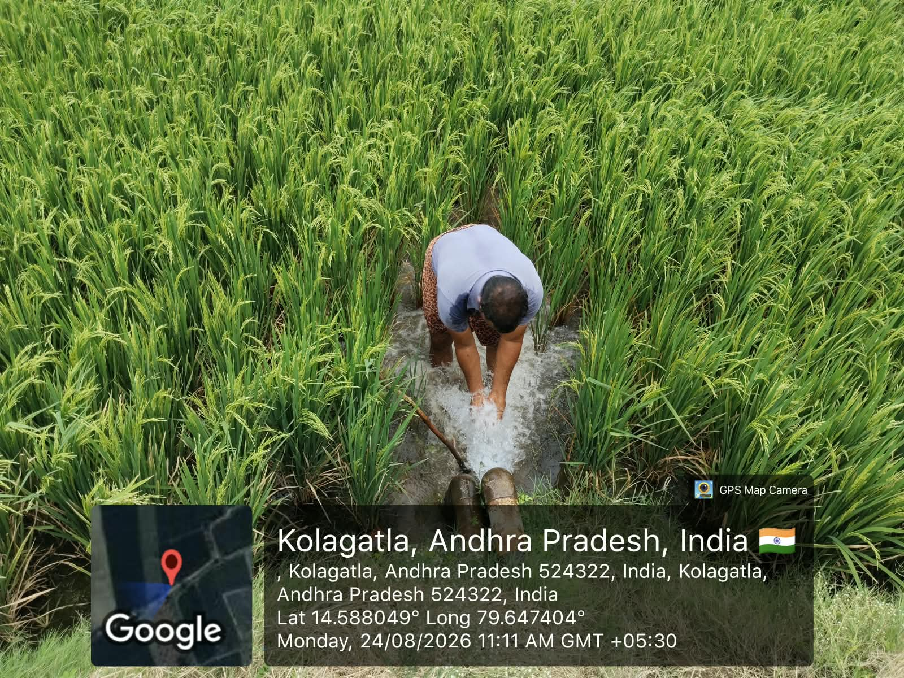
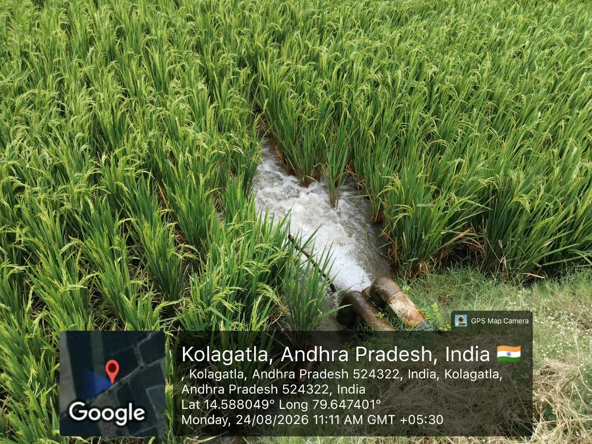
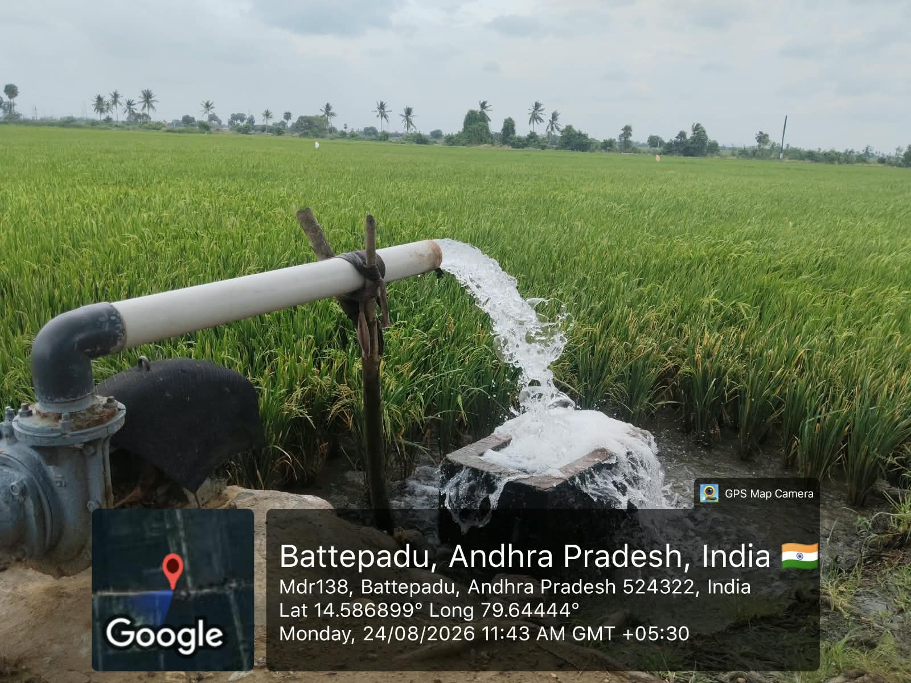

Community Service Project
Week 4 Report
Learning irrigation, drainage and careful water management in paddy cultivation.
| Day | Activity | Observations / Notes |
|---|---|---|
| Day 1 | Observed field water channels. | Studied how water moves through the channel beside the paddy field and reaches the crop area. |
| Day 2 | Participated in cleaning the water channel. | Worked with the team to remove blockages and understand the importance of keeping irrigation paths clear. |
| Day 3 | Observed water entering the paddy field. | Noted the flow of water between crop rows and how farmers maintain suitable field moisture. |
| Day 4 | Checked drainage and outlet points. | Learned how controlled drainage prevents excess water from damaging the paddy crop. |
| Day 5 | Recorded irrigation observations. | Understood that timely water supply, proper channels and careful drainage are essential for healthy organic paddy production. |
Image Gallery




